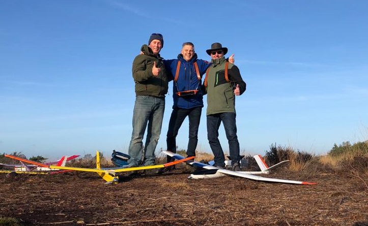

Brevet vliegen bij de ALC. (Geschreven door Ruud de Haas)
Eindelijk was het dan zover, vier leden van de ALC gaan vliegen voor het brevet rc zweefmodellen. Het is de bedoeling om te starten met je model, in ons geval met een elektromotor. Daarna drie minuten vliegen zonder motor en middels een circuit te landen. Dit landingscircuit bestaat uit twee haakse bochten.

Het was een prachtige winterdag met een stralend zonnetje en nagenoeg geen wind, op het uitblijven van thermiek na ideale condities om brevet te vliegen. De afspraak was om eerst nog een uurtje te oefenen waarna het afvliegen zou beginnen.
Nadat iedereen aanwezig was werd er afgesproken waar de landingsplaats zou zijn en hoe het circuit er uit zag. De vliegtuigen werden opgebouwd en getest of alles werkte. Het duurde dan ook niet lang of er werd “start” geroepen en de vier zweefmodellen kozen het luchtruim. Er werd naarstig gezocht naar enige thermiek wat helaas niet gevonden werd, dan maar het landingscircuit inzetten. Bij mij gaat dat meestal wel goed, maar zal je net zien staat er ineens een boom in de weg. Met een flinke zwiep werd het vliegtuig hoog in de boom geparkeerd. Dat wordt klimmen hoor ik nog. Ik loop samen met Jaap, een collega clublid naar de bewuste boom en begin met de klim. Bij het toestel aangekomen werp ik deze uit de boom. Uiteindelijk zit er gelukkig maar een klein scheurtje in de bespanning wat met een plakbandje opgelost kon worden. Pfft.
Het examen vliegen kan beginnen. Voor de zekerheid plaats ik een vol geladen accu. Ik ben als tweede aan de beurt. Zet de zender aan, sluit de accu van de zwever aan en laat de examinatoren zien dat alles werkt. Ik kijk om mij heen en zie dat alles veilig is en roep “start”. Mijn zwever gaat gestaag omhoog, op hoogte stop ik de motor en zweef in een rechte lijn door de lucht. Ik merk dat mijn vliegtuig veel sneller vliegt als anders en dat ik dit met hoog/laag knuppel op mijn zender probeer te corrigeren. Wat vreemd, zou dit dan toch met die confrontatie met de boom te maken hebben? Ik heb moeite om de vereiste drie minuten vol te maken en roep “landing” en begin aan mijn landingscircuit bij de laatste bocht duikt het vliegtuig over de wingtip weg en raakt hard de grond. Ik sta beduusd te kijken. Wat gebeurd hier nou? De zwever mankeerde gelukkig niets en uiteindelijk bleek dat ik in alle consternatie de accu veel te ver naar voren had gelegd waarbij dus het zwaartepunt te ver naar voren lag, geen wonder! De volgende twee vluchten waren prima en zo ook bij de andere drie kandidaten.

Het programma werd afgewerkt en alle vier waren we geslaagd.
Daarna heb ik nog een “maiden” gevlogen met een gerestaureerde zwever en hebben we met ons allen nog een uur heerlijk genoten.
Met een voldaan gevoel zijn we weer huiswaarts gekeerd.
Tijdens onze eindejaars club dag hebben we alle vier het brevet uitgereikt gekregen. Op naar vele mooie vluchten.